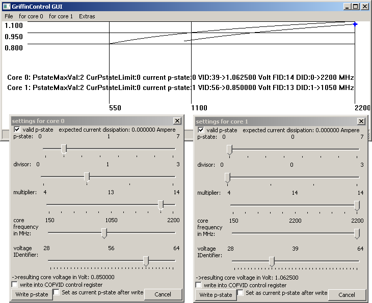

GriffinControl GUI
last edit: 04th Sep 2009 GMT+1
The GUI is mainly intended to test frequency-voltage pairs for operating stability.
On
the main frame the curve for the default voltage is drawn. It is also
the overvoltage protection curve: possibly the CPU could be damaged if
the voltage is set too high. You should not set a voltage above this
curve. Else writing the values is prevented by disabling the "write
p-state" button.

The current performance state number for each CPU core is updated once a second.
The
"write into the COFVID control register" option does not change
the values of a performance state(?). With this option you must select a
performance state that is different from the current performance state in order for changes to take effect.
The AMD documentation suggests (if I recall correctly):
- if
one changes the settings via the "COFVID control register" to a
frequency and voltage that is above the current frequency and
voltage then a higher performance state number should be
specified.
- if one changes the settings via the "COFVID control register" to a
frequency and voltage that is below the current frequency and voltage
then a lower performance state number should be specified.